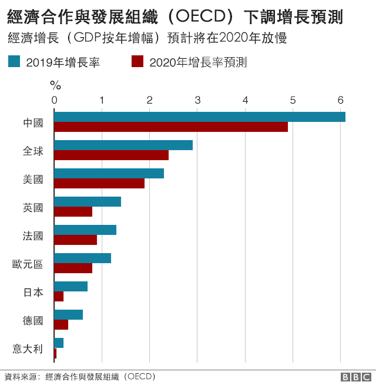
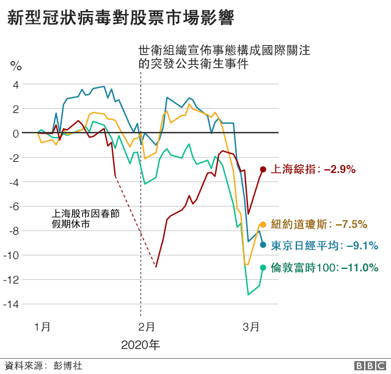
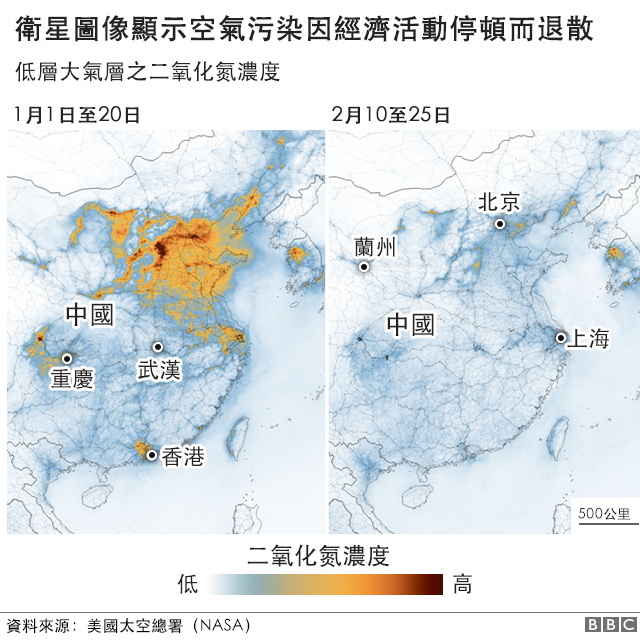
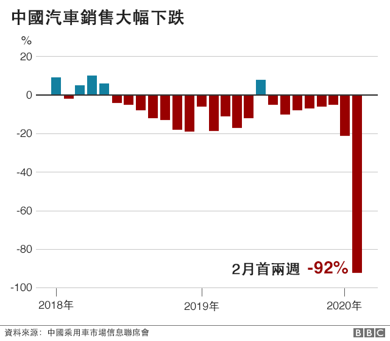
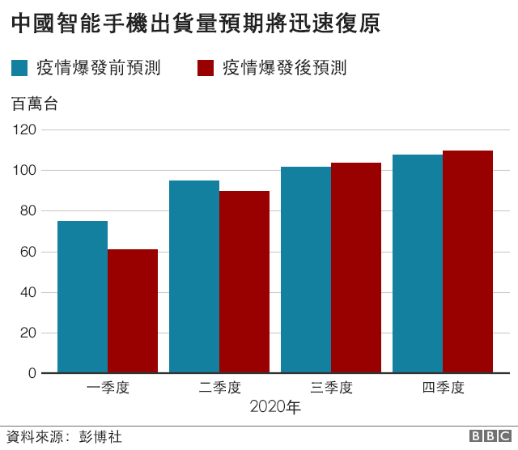
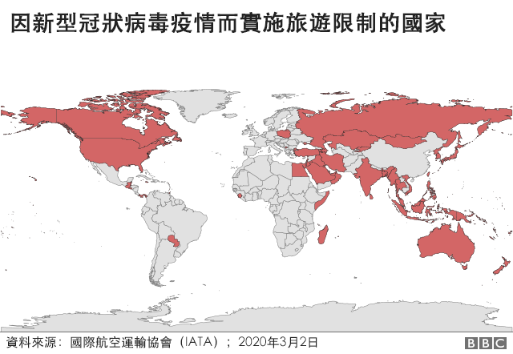
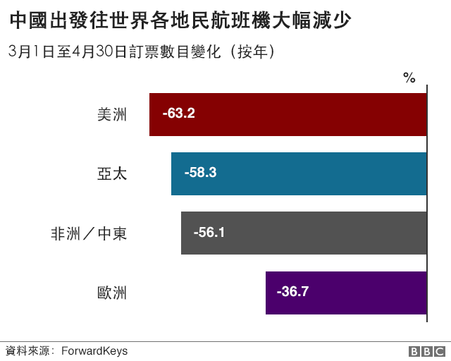
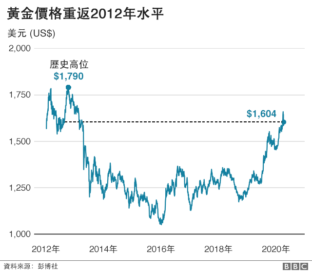

說明新型冠狀病毒如何衝擊全球經濟
經濟發展恐停滯不前
經濟在增長，一般來說意
味著財富與就業崗位增加
。透過量度國內生產總值（
GDP），也就是貨物與服務產
出總值的百分比變化，我們
就能得知經濟是否有增長，而
觀察期一般為三個月。經濟合作
與發展組織（OECD）最近警告，
受新冠疫情影響，全球經濟今年或
會出現2009年以來最慢的增速。

OECD預測，2020年全球經濟將只能同比增長2.4%。組織在去年11月時的預測是
增長2.9%。該智庫還指出，要是出現「長期且更密集的」疫情爆發，為了抗疫而讓工
廠停工，工人留家，那麼2020年的增長率將進一步降至1.5%。
衝擊全球股市
隨著新冠病毒從中國
向外擴散，投資者擔
心疫情所帶來的影響。股
市大幅波動，而這可能會影響
到某些類型的退休金計劃與個人儲蓄賬戶。2
020年2月份最後一周，多個環球主要股市出現
了自2008年金融危機以來最差的表現。

隨後，市場憧憬各國政府會介入保護其經濟免
受新冠病毒爆發影響，歐美股市略見起色。美國央行——
聯邦儲備局——就採取了降息措施，以回應市場不斷
累積的焦慮情緒。理論上這會讓借貸更「便宜」，鼓
勵民間消費，從而刺激經濟。
工廠停工緩產
中國佔據全球製造業三分之一份額，是世界第一出口
國。但為了阻止COVID-19病毒繼續擴散，這家「世界工
廠」只能暫停運作。

美國國家航空航天局（NASA，又譯美國宇航局或美國太空
總署）表示，旗下污染監測衛星發現中國各地的二氧化氮濃度顯著
下跌，且有證據證明這「至少局部」是因為疫情爆發導致經濟放慢的
緣故。旅遊出行限制影響到許多大企業的供應鏈，像帝亞吉歐（D
iageo）、工程機械製造商JCB和日產汽車，都得依賴中國製造業及其
3億移民工。捷豹路虎（Jaguar Land Rover）甚至表示，因為一些工
廠已無零部件可用，他們不惜拿著行李箱從中國把零部件帶回英國。
消費者「手緊」
一些人懼怕受新冠病毒感染，
避免參加可能讓自己暴露於危險中
的活動，比如說逛街購物。餐廳、
汽車銷售點等紛紛表示生意淡靜。

例如，中國汽車銷售在2月上半段比去年同期減少92%。特斯拉（Tesla）跟吉利汽車等甚
至開始在網上售車，避免顧客集中在銷售大廳裏面聚集。預計在2020年上半年，智能手機發貨也
將受顯著影響，但稍後有望恢復。

蘋果公司是其中一家表示受到顧客需求低影響的企業。
旅遊業受災嚴重
新冠病毒確診病例每天都在世界不同地方出現，許多國家為了控制病毒傳播而實施旅遊限制。

英國建議國民切勿前往最先發現病毒的中國湖北省，也發出對意大利的特別旅遊警示。
整個旅遊業都受到嚴重影響，航空公司削減航班，無數旅客取消度假或商務差旅。

數據分析公司 ForwardKeys 的資料顯示，中國旅客訂票外遊，比去年同期少55.9%。
英國旅遊業專家紛紛對中國遊客足不出戶表達擔憂。英國旅遊局（VisitBritain）指出，
截至2019年9月的12個月，共有41.5萬名中國遊客到訪英國。中國遊客在英國人均消費168
0英鎊（2163美元；1.5萬元人民幣），是其他遊客的三倍。隨著越來越多的大型活動被取消
，航班取消數字也繼續上升，旅遊業界擔憂他們還要承受更嚴峻的衝擊。
一些亮點
當大家的飯碗受威脅，要找個正面信息出來大概是困難的，尤其是在冠狀病毒疫情上，受
威脅的是人命。然而，單純在商言商的話，還真有些值得注意的特色。好像消費品巨頭利
潔時（Reckitt Benckiser）就表示，旗下滴露（Dettol）與來舒（Lysol）消毒產品銷售錄
得顯著增長。雖然其效用有待科學家驗證，但許多消費者相信其產品能保護他們免受病毒感染。

黃金經常被視為「資金避難所」，最近黃金價格也水漲船高。在2月份，每盎司黃金價格一度攀
上1682.35美元的歷史高位。投資者恐懼新冠病毒擴散到中國以外，將進一步打擊環球經濟與消
費者需求，紛紛投向黃金市場。